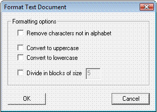

Dialog Format Text Document
You can reach this dialog using the menu entry View \ Format Text Document.

With this dialog you can format the currently activated document. The following parameters are supported:
- Remove characters not in alphabet: If this check box is checked, all characters not part of the CrypTool alphabet are removed.
- Convert to uppercase: With this check box you can convert all characters in the document to uppercase.
- Convert to lowercase: With this check box you can convert all characters in the document to lowercase.
- Divide in blocks: If this check box is checked, the document is divided in blocks of the given size. Please note that line breaks and spaces get lost.
After the formatting process a new document is opened. This way the original document remains untouched.